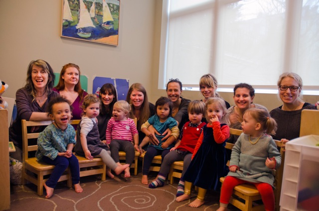
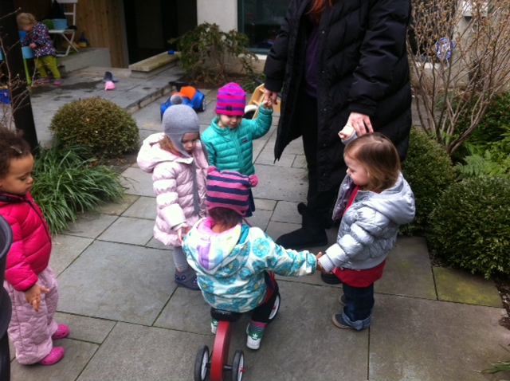
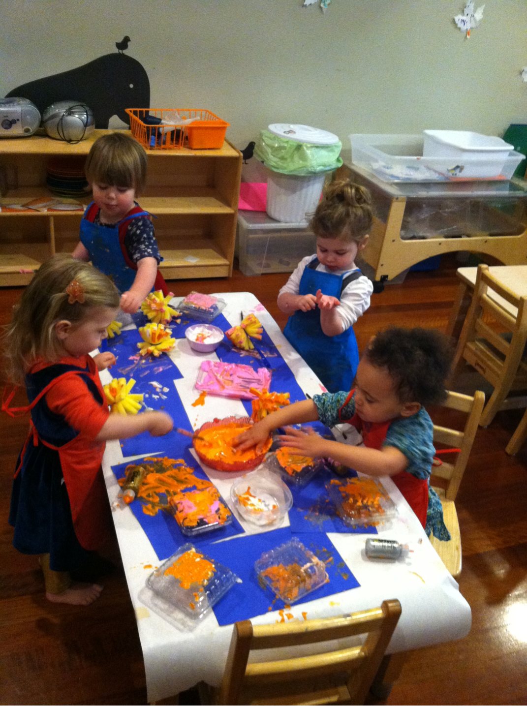

The Butler Street Cooperative Preschool was formed in 2012 by a group of seven families.
In our first year, we have offered a 2s program, held in the garden apartment in the home of one of our families.
Our seven children meet three mornings a week, independent of their caregivers and under the guidance of a head teacher,
assisted by parents who have rotated as assistant teachers.
Our teacher has an MA in Early Childhood and Elementary
Education as well as certification in Infant/Toddler Montessori education, and our classroom has reflected her eclectic
approach to teaching preschoolers. The learning environment is significantly influenced by Montessori principals and
also mindful of social and emotional development as well as creative exploration and play. Our mission has been to
create a playful, safe, intentional environment for our kids. We are all working towards nurturing independent,
curious children who love learning and will grow to understand how to navigate being social, empathic, and autonomous people.
About
Goals
Contact

For the upcoming academic year (2013-2014), we are planning to grow our school to include both a 2s and a 3s program.
After careful debate, we have decided to expand our mission to focus not only on creating a nurturing space for our own kids,
but to contribute to our community another, more permanent establishment for early childhood education. We are seeking new
families to join us in this effort. The details of next year's Butler Street Co-op are as follows:
- Each class will have between 7 and 10 children and two teachers.
- The 2s group:
- will meet Tuesday-Thursday, 830am-11am (following a phase-in period to allow adjustment to separating from caregivers)
- will be for children born in 2011 (with an option to open to Jan-early March 2012)
- The 3s group:
- will meet Monday-Thursday, 9am-12pm
- will be for children born in 2010
- We will relocate to a space at 47 Bergen Street, which we will sublet from the new tenant there, Beam Camp's afterschool program.
- Our high estimate is that monthly costs will run between $800-950 per family. The closer we get to 10 children/classroom, the lower these costs become.
- Legally, we will operate as a co-operative. All duties (besides teaching) will be performed by parents of the co-op, who will commit to various committees or roles.

HOW TO LEARN MORE:
- We will be holding two information sessions, on March 11th and April 10th.
- These will be held in our current classroom space and attended by our current head teacher and some of our co-op parents.
- We will have play visits in April, to give us a chance to continue to get to know each other.
- We hope to have commitments from new families by May.
- Email us at: info@butlerstreetcoop.com